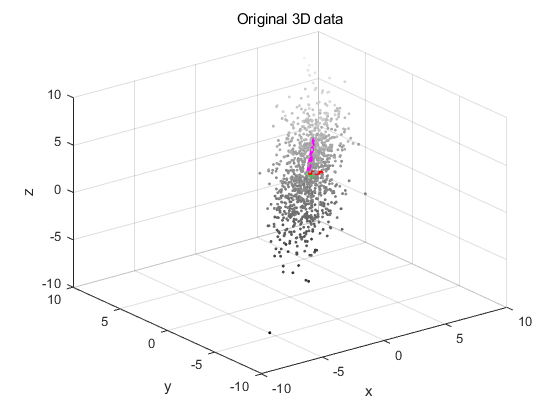
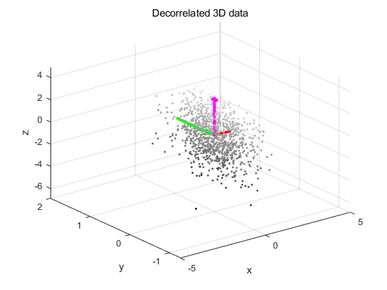
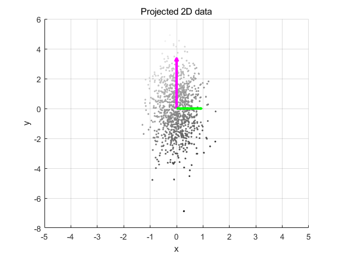
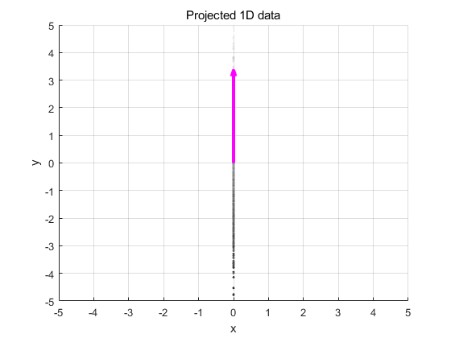

This script generates and plots 3D data, and performs a principal
Contents
component analysis to decorrelate the data, and to reduce the
dimensionality of the feature space.
clear all;
close all;
clc;
s = [2 2 2];
x = randn(1000,1);
y1 = normrnd(s(1).*x,1)+3;
y2 = normrnd(s(2).*x,1)+2;
y3 = normrnd(s(3).*x,1)+1;
data = [y1 y2 y3];
plot3(data(:,1), data(:,2), data(:,3), '.')
avg = mean(data);
X0=avg(1);
Y0=avg(2);
Z0=avg(3);
scatter3(data(:,1), data(:,2), data(:,3), 5, data(:,3), 'filled');
colormap(gray);
covariance = cov(data);
[eigenvec, eigenval ] = eig(covariance);
largest_eigenvec = eigenvec(:, 3);
largest_eigenval = eigenval(3,3);
medium_eigenvec = eigenvec(:, 2);
medium_eigenval = eigenval(2,2);
smallest_eigenvec = eigenvec(:, 1);
smallest_eigenval = eigenval(1,1);
hold on;
quiver3(X0, Y0, Z0, largest_eigenvec(1)*sqrt(largest_eigenval), largest_eigenvec(2)*sqrt(largest_eigenval), largest_eigenvec(3)*sqrt(largest_eigenval), '-m', 'LineWidth',3);
quiver3(X0, Y0, Z0, medium_eigenvec(1)*sqrt(medium_eigenval), medium_eigenvec(2)*sqrt(medium_eigenval), medium_eigenvec(3)*sqrt(medium_eigenval), '-g', 'LineWidth',3);
quiver3(X0, Y0, Z0, smallest_eigenvec(1)*sqrt(smallest_eigenval), smallest_eigenvec(2)*sqrt(smallest_eigenval), smallest_eigenvec(3)*sqrt(smallest_eigenval), '-r', 'LineWidth',3);
hold on;
hXLabel = xlabel('x');
hYLabel = ylabel('y');
hZLabel = zlabel('z');
xlim([-10,10]);
ylim([-10,10]);
zlim([-10,10]);
title('Original 3D data');
data = data-repmat(avg, size(data, 1), 1);
stdev = sqrt(diag(covariance));
data = data./repmat(stdev', size(data, 1), 1);
decorrelateddata = (data*eigenvec);
figure;
scatter3(decorrelateddata(:,1), decorrelateddata(:,2), decorrelateddata(:,3), 5, decorrelateddata(:,3), 'filled');
colormap(gray);
hold on;
quiver3(0, 0, 0, 0, 0, 1*sqrt(largest_eigenval), '-m', 'LineWidth',3);
quiver3(0, 0, 0, 0, 1*sqrt(medium_eigenval), 0, '-g', 'LineWidth',3);
quiver3(0, 0, 0, 1*sqrt(smallest_eigenval), 0, 0, '-r', 'LineWidth',3);
hold on;
hXLabel = xlabel('x');
hYLabel = ylabel('y');
hZLabel = zlabel('z');
xlim([-5,5]);
xlim([-5,5]);
xlim([-5,5]);
title('Decorrelated 3D data');
eigenvec_2d=eigenvec(:,2:3);
data_2d = data*eigenvec_2d;
figure;
scatter(data_2d(:,1), data_2d(:,2), 5, data(:,3), 'filled');
colormap(gray);
hold on;
quiver(0, 0, 0*sqrt(largest_eigenval), 1*sqrt(largest_eigenval), '-m', 'LineWidth',3);
quiver(0, 0, 1*sqrt(medium_eigenval), 0*sqrt(medium_eigenval), '-g', 'LineWidth',3);
hold on;
hXLabel = xlabel('x');
hYLabel = ylabel('y');
xlim([-5,5]);
xlim([-5,5]);
title('Projected 2D data');
grid on;
eigenvec_1d=eigenvec(:,3);
data_1d = data*eigenvec_1d;
figure;
scatter(repmat(0, size(data_1d,1), 1), data_1d, 5, data(:,3), 'filled');
colormap(gray);
hold on;
quiver(0, 0, 0*sqrt(largest_eigenval), 1*sqrt(largest_eigenval), '-m', 'LineWidth',3);
hold on;
hXLabel = xlabel('x');
hYLabel = ylabel('y');
xlim([-5,5]);
ylim([-5,5]);
title('Projected 1D data');
grid on;
   